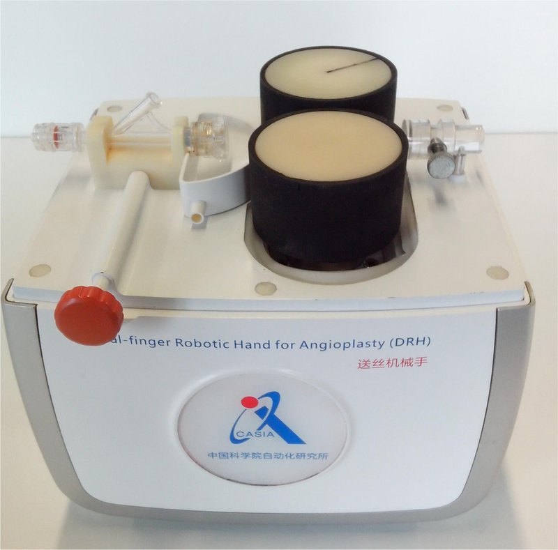

Academic bedside robots · vascure_zhao2021
CASIA VasCure
CASIA vascular robotic system: Dual-finger Robotic Hand (DRH) and VasCure two-channel PCI robot

1 / 9


- Family
- Academic bedside robots (academic)
- Devices
- guidewire (two guidewires in VasCure) and balloon/stent catheter; master has separate catheter and balloon joysticks; guide catheter advanced manually by the assistant in the pig test (zhao2021_vascure Sec. II-A, III-B)
- Degrees of freedom
- N.R. as a total; per channel guidewire translation + rotation (zhao2021_vascure Sec. II-B) 2015 DRH: thumb 2 DOF + forefinger 3 DOF (feng2015 Sec. II-A).
- Push
- Friction rollers
- Twist
- Rolling between rollers
- Tested up to
- Animal
- Sim-to-real
- None found — No simulation-trained controller found for this robot.
Testing
- Highest level
- Animal
- What was tested
- Remote pig PCI over a 5G commercial network, surgeon about 10 km away, two guidewires to LCX and LAD then balloons along both (zhao2021_vascure Sec. III-B; one pig described); GPC controller PCI on an experimental pig, IAE reduced by at least 20% (zhang2021_improved, abstract); further 5G remote PCI pig trials reported by a review (Han 2023 via chen2026_teleoperation [57], review-level)
- Key numbers
- VasCure max guidewire error 0.25 mm advance / 0.38 mm retract over 150 mm at 7.2-25.2 mm/s, 10 trials per speed per channel, EM tracker at 40 Hz (zhao2021_vascure Sec. III-A, Tables I-II); DRH mean axial RMSe 0.72 +/- 0.49 mm (wei2020_novel Abstract); review: 5G latency 90 -> 163 ms at 1100 km and 81 -> 161 ms at 18.3 km (chen2026_teleoperation, Han 2023); learning on the robot: CASOG 94.00 +/- 4.32% success (50 deliveries x 3 seeds; human demonstrations 39/42) on a 15 x 15 x 1 cm printed planar phantom (li2023_casog, arXiv HTML Table 2); CORVE 80.33 +/- 5.09% and 84.00 +/- 4.76% vs CASOG 69.67 +/- 2.69% on phantom 1 (li2024_modelbased Table II) 2015 DRH (feng2015 Sec. III): 5 trials per manipulation (guidewire and balloon/stent translation at 10 mm/s, guidewire rotation), speed sweeps 0.5-60 mm/s; RMS errors shown only as bar plots (Fig. 6), no number in the text.
Mechanism
- Push (translation)
- friction-roller
- Twist (rotation)
- other: active and passive rollers translate along their own axes to roll the wire like thumb and forefinger (zhao2021_vascure Sec. II-B); A4/chen2026 review calls it a subjacent lifting mechanism
- Device range
- N.R. (DRH stated compatible with catheters and balloon/stent catheters of different diameters, wei2020_novel Sec. 2) 2015 tests: guidewire 0.35 mm (0.36 in Table I) and balloon/stent catheter 0.7 mm, displacement limited to 200 mm (feng2015 Sec. III-A, III-D).
- Target anatomy
- coronary (PCI; bifurcation lesions with two-stent technique)
Sensing and interface
- Force sensing
- proximal: guidewire friction force from motor torque via a T21WN torque sensor (li2024_modelbased Sec. IV-B); no integrated force feedback in VasCure per chen2026_teleoperation (review) 2015 DRH: none; a torque sensor is future work (feng2015 Sec. IV).
- Leader and haptics
- no force feedback reported; master console = guidewire handle (push/pull + rotating knob), catheter joystick, balloon joystick, touchscreen GUI (zhao2021_vascure Fig. 3)
- Imaging
- X-ray fluoroscopy (DSA in pig PCI); EM tracking used for bench accuracy
- Sterility
- N.R.
Size
- Footprint (mm)
- N.R.
- Mass (kg)
- N.R.
Simulation
- Simulation model
- group's own guidewire/vessel VR simulators (fast and stable guidewire simulator EMBC 2015; elastic guidewire simulator wang2018_simulator; titles only); no model of the robot found
- Sim-trained controller
- none found: the RL controllers (CASOG, CORVE, discrete SAC, offline-online RL) were trained on data recorded on the physical robot over a planar phantom with an overhead 140 x 140 px camera, not in simulation (li2024_modelbased Sec. III-A, full; li2023_casog Sec. IV, arXiv HTML); li2023_discrete (Robotica 2023, full): DSAC-AE learned guidewire delivery directly on the 2-DOF robot over a 15 x 15 x 1.5 cm 3D-printed planar model, 140 x 140 px overhead images, 10 discrete actions every 0.5 s, success after 50k real samples in < 15 h (Sec. 2.1, 4); the paper argues against training in simulation (Sec. 1)
Versions
- Lineage
- 2011 image-based guidewire navigation and delivery system (ji2011_guidewire, title); 2013 enhanced dual-finger robotic hand for catheter (bian2013_enhanced, title); 2015 dual-finger robotic hand (DRH): bionic thumb (driven roller, 2 DOF) and bionic forefinger (passive roller, 3 DOF); rotating the rollers about their axes advances the device, translating them in opposite directions along their axes rolls it; two steppers, guidewire gripper, console with handle and LCD panel; bench tests with EM tracking (feng2015_bioinspired, full: Sec. II-A, II-B, III); motion-scaling control (feng2015_motion abstract); 2020 Dual-finger Robotic Hand for Angioplasty, DRH: bionic thumb + bionic forefinger rollers on two steppers, DC-motor clamping, guidewire gripper (wei2020_novel Sec. 2, full); 2021 VasCure: one active + two passive rollers = two channels for two guidewires, graspers A/B, slave on a robot arm (zhao2021_vascure Sec. II, full) and 5G version with generalized predictive control (zhang2021_improved, abstract); 2023-2025 same platform in a white/blue housing on an arm used for learning-based delivery (li2024_modelbased Fig. 2; li2023_casog; li2023_discrete; wang2025_fuzzy); VasCure
Sources
- Design and Performance Evaluation of a Novel Vascular Robotic System for Complex Percutaneous Coronary Interventions · 2021 43rd Annual International Conference of the IEEE Engineering in Medicine & Biology Society (EMBC), 2021 · doi:10.1109/embc46164.2021.9629943 [zhao2021_vascure]
- A Novel Vascular Robotic System: Performance Evaluation · Neural Information Processing, 2020 · doi:10.1007/978-3-030-63833-7_61 [wei2020_novel]
- An Improved Networked Predictive Controller for Vascular Robot Using 5G Networks · 2021 43rd Annual International Conference of the IEEE Engineering in Medicine & Biology Society (EMBC), 2021 · doi:10.1109/embc46164.2021.9630311 [zhang2021_improved]
- Design and evaluation of a bio-inspired robotic hand for percutaneous coronary intervention · 2015 IEEE International Conference on Robotics and Automation (ICRA), 2015 · doi:10.1109/icra.2015.7139944 [feng2015_bioinspired]
- Preliminary study for motion scaling based control in minimally invasive vascular interventional robot · 2015 37th Annual International Conference of the IEEE Engineering in Medicine and Biology Society (EMBC), 2015 · doi:10.1109/embc.2015.7319490 [feng2015_motion]
- An enhanced dual-finger robotic Hand for Catheter manipulating in vascular intervention: A preliminary study · 2013 IEEE International Conference on Information and Automation (ICIA), 2013 · doi:10.1109/icinfa.2013.6720323 [bian2013_enhanced]
- Guidewire navigation and delivery system for robot-assisted cardiology interventions · IEEE 10th International Conference on Cognitive Informatics and Cognitive Computing (ICCI-CC′11), 2011 · doi:10.1109/coginf.2011.6016161 [ji2011_guidewire]
- CASOG: Conservative Actor–Critic With SmOoth Gradient for Skill Learning in Robot-Assisted Intervention · IEEE Transactions on Industrial Electronics, 2024 · doi:10.1109/tie.2023.3310021 [li2023_casog]
- Model-Based Offline Reinforcement Learning for Autonomous Delivery of Guidewire · IEEE Transactions on Medical Robotics and Bionics, 2024 · doi:10.1109/tmrb.2024.3407349 [li2024_modelbased]
- Discrete soft actor-critic with auto-encoder on vascular robotic system · Robotica, 2022 · doi:10.1017/s0263574722001527 [li2023_discrete]
- A Fuzzy-Logic-Based Method for Autonomous Guidewire Delivery · 2025 IEEE International Conference on Real-time Computing and Robotics (RCAR), 2025 · doi:10.1109/rcar65431.2025.11139655 [wang2025_fuzzy]
- A simulator with an elastic guidewire and vascular system for minimally invasive vascular surgery · Science China Information Sciences, 2018 · doi:10.1007/s11432-017-9476-y [wang2018_simulator]
- Remote Teleoperation of Endovascular Intervention Robots: A Systematic Review · IEEE Transactions on Medical Robotics and Bionics, 2026 · doi:10.1109/TMRB.2026.3681030 [chen2026_teleoperation]
Notes
- Notes
- SAME ROBOT as A4 row vascure_unknown2021 (developer N.R. there): VasCure is CASIA's (zhao2021_vascure author list and Sec. I). Merge: keep this row's group/mechanism/numbers and A4's review-level 5G trial counts. The A4 'clinical-stage' label is not supported: no human study found. X-ray overlay in zhao2021 Fig. 10 reads 'SH WEICHUANG MEDICAL CO.' (meaning N.R.). | 2026-11-08 X3: li2023_discrete read in full; its Fig. 1(a) (robot beside the planar phantom) added to the gallery as _08; merged from vascure_unknown2021 (A4)
This record
- Read level
- full — full (zhao2021_vascure, wei2020_novel, li2024_modelbased); partial (li2023_casog arXiv HTML); abstract (zhang2021_improved, feng2015_motion); review (chen2026_teleoperation); full (feng2015_bioinspired, 2026-10-14); title (ji2011_guidewire, bian2013_enhanced, wang2025_fuzzy); full (li2023_discrete,, 2026-11-08)
- Picture
- wei2020_novel Fig. 1 (DRH; native embedded raster p. 3) ↗ — licence: publisher copyright; grade A
- Picture changes
- native extract; no crop; no edits; not upscaled
- Found by
- gap: Gap searches for robots the other searches missed.
- Data
- JSON · YAML:
records/robots/vascure_zhao2021.yaml - Correction
- Suggest a correction [repository not created yet]